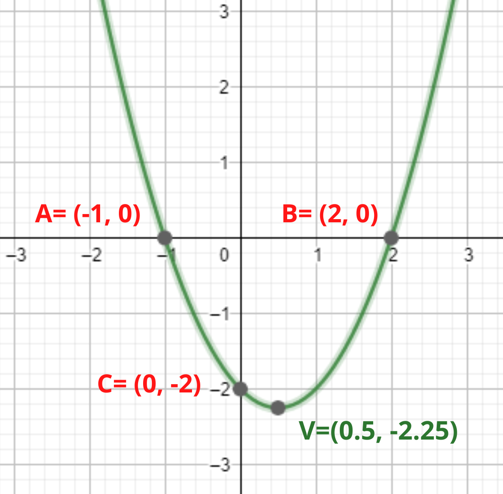
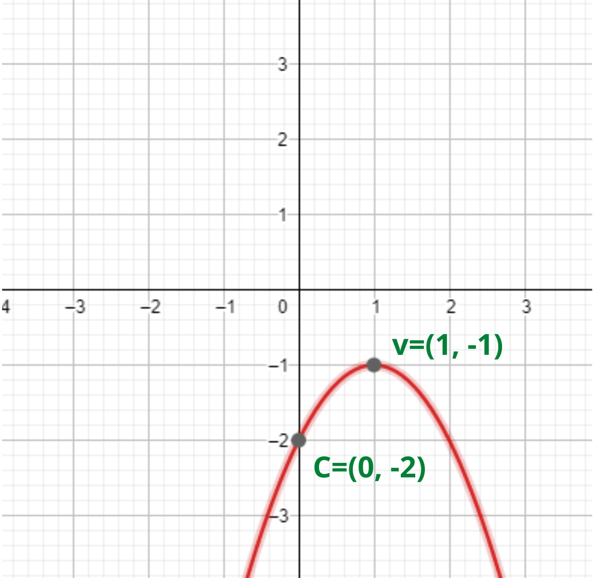
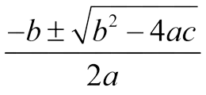
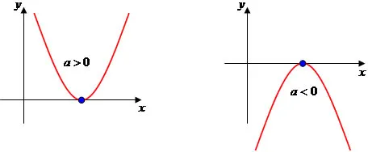

• Os coeficientes a, b e c
são números reais e o coeficiente a precisa ser,
necessariamente, diferente de zero.
• O gráfico de uma função quadrática será sempre uma parábola com
eixo de simetria paralelo ao eixo dos y.
• Seu domínio é D(f) = ℝ, mas dependendo da situação
contextualizada
envolvida o domínio pode mudar.
• A imagem dependerá da concavidade e do vértice
da parábola.
1. Na função f(x) = x² - x - 2, temos:
▪ A concavidade da parábola é voltada para cima
.
▪ Dois pontos de intersecção estão no eixo x , os
pontos
A e B.
▪ Um ponto de intersecção está no eixo y, o ponto
C.
▪ Um ponto mínimo, o ponto V
(vértice) da parábola.

2. Na função f(x) = -x² + 2x - 2, temos:
▪ A concavidade da parábola é voltada para baixo
.
▪ Não há pontos de intersecção no eixo x .
▪ Um ponto de intersecção está no eixo y, o ponto
C.
▪ Um ponto mínimo, o ponto V
(vértice) da parábola.

RAÍZES REAIS OU ZEROS DA FUNÇÃO QUADRÁTICA
Para encontrá-las basta atribuir zero para o y
(ou para a f(x)) ,
transformando a função numa equação do 2º grau e resolvê-la:
Usando a Fórmula de Bháskara em qualquer equação de 2º grau:

Há outras formas de encontrar as raízes de uma equação quadrática SEM o uso da
bháskara, com Regra de SOMA e PRODUTO:
Ela consiste em: realizar cálculos mentais usando os
coeficientes a, b e c.
Fica
fácil usar esse método quando os coeficientes
e as raízes são números inteiros e o coeficiente a é
igual a 1.
Para EQUAÇÕES INCOMPLETAS:
• Quando nós temos c = 0 usamos FATORAÇÃO.
• Quando nós temos b = 0 isolamos o
x.
CONCAVIDADE
Para identificarmos a concavidade de nossa parábola, basta analisar o sinal do
coeficiente
a.

VÉRTICE
Como encontrar o VÉRTICE?
1° FORMA: O primeiro passo é encontrar as raízes. O x do
vértice (xv
) será a média
aritmética entre as raízes. O y do vértice (yv
) pode ser obtida
substituindo o x encontrado na função dada:
2° FORMA: Usar a fórmula abaixo a partir dos coeficientes
da função:
GRÁFICO
Como construir o GRÁFICO?
1º: Analisar a concavidade.
2º: Calcular as raízes reais, se existirem.
3º: Determinar o ponto de interseção com o eixo y.
4º: Calcular as coordenadas do vértice
CLASSIFICAÇÃO: Fácil